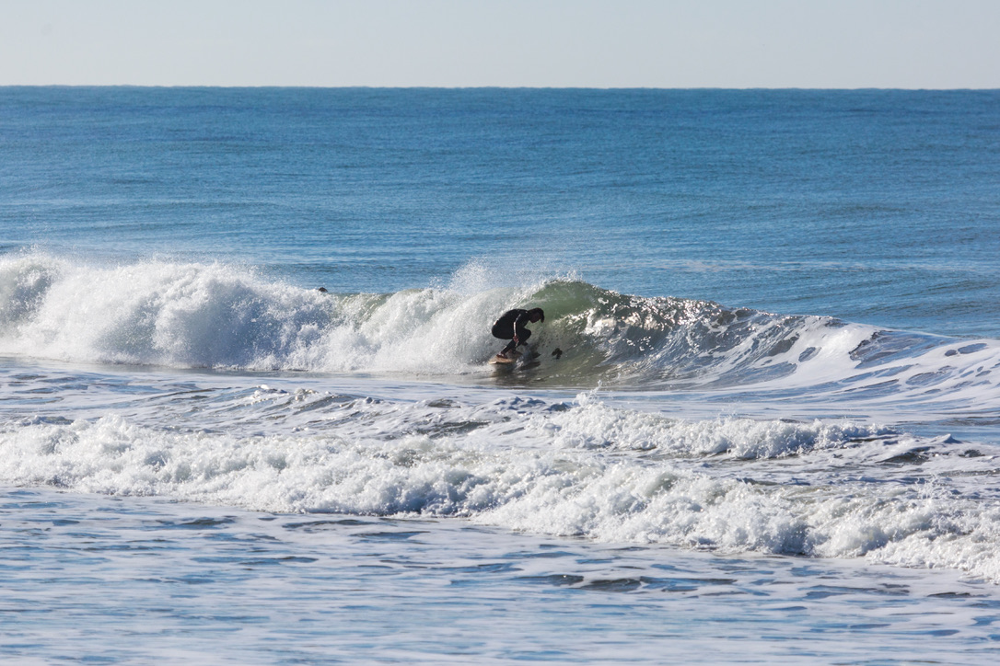

Welcome to Frothy Cappuccino, a site for salty heads to appreciate the subtle moments of clarity and individuality that can be expressed from drawing lines on a wave and to explore the foundations of hydronamics in surfboard design.
Shot by Stephanie Drews, This is me tucked into a micro barrel, around Oxnard, California on a nice breezy offshore winter day making some playful little waves. This little honey hole was perfect for my 70's style diamond tail tube shooter. For more photos and stories click on the blog page!
